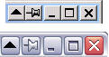
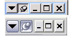
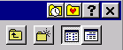
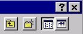
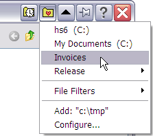

FileBox eXtender enhances the Windows user interface in several powerful ways. It adds a "push-pin" button to your "top level" windows. This function prevents any window you "pin" to the desktop from being covered by any other windows. This is great when you want to keep an eye on one program, but use another. (For example, refer to a document window in Word while typing an E-mail in another program.)
Another FileBox enhancement is the "roll-up" button added to top level windows. When you click it, the window is "rolled up" leaving only its title bar visible, and uncovering what was underneath it. Click that button again, and the window rolls back down. The Always on Top and Rollup commands can be also displayed on the system menu of any window.
 
Window title bars with roll-up and push-pin buttons
FileBox further enhances Windows by adding several advanced functions to the standard Open File and Save File dialog boxes. (Note that if a program uses its own "private" dialog boxes for these functions, you won't see our FileBox buttons, sorry.)
FileBox adds two handy buttons to these standard dialogs. These appear on the right side of the Windows dialog box title bars. These buttons appear next to the minimize, restore, and maximize buttons with which you're probably already familiar.
FileBox can also forcibly resize the standard Windows file management dialog boxes so they're bigger, and thus easier to use if you've got lots of files in a folder through which you need to look. The two pictures below show a small part of the Windows standard Open File dialog box:
 
Standard Windows File/Save As… box
with and without FileBox eXtender buttons
These special buttons will appear for all styles of file dialogs (the old Windows 3.1 style file dialog boxes, new "Explorer" style boxes introduced with Windows 95, and even with the latest file dialog boxes in MS Office and Windows XP).
And don’t worry---if you don’t like the pictures on our buttons, there's a very easy way to change them.
FileBox eXtender has a nifty option to display these buttons on Windows Explorer folders too, and this can greatly speed up navigation through today's huge hard disks.
Okay, I'm hooked, so what do these extra buttons do?
The button with a little heart on it like this: displays a "Favorites" menu. The FileBox Extender Configuration window allows you to add your favorite folders, files, document names, or other text items on it. You can use this to make Windows work as you want it to work (not how it wants to do things "out of the box").
Here's what happens when I press that button on my computer:

As you can see, a menu of my favorite places appeared, and now I can navigate across my hard disk to where I need to go with just a single click. I've also created a "File Filters" sub-menu, which lists the file types I open frequently, such as *.zip and *.doc, which I often attach to email messages.
Please note the Add: item near the bottom of the menu. It lets you add the currently-displayed folder seen in the dialog box to the Favorites list. If the current folder was already on that list, this item would appear as Remove: letting you quickly delete it if you no longer need rapid access to that location.
It's important to remember that it's the folder location of the dialog box's window, not the cursor's position within it (which might be highlighting another sub-folder) that determines the location that will be added to your list. So be sure to double-click a sub-folder to "go into" that folder before choosing Add if that folder is what you really want to add to the list. The current folder is never visible as a folder graphic within a dialog box window, those are folders beneath the current folder. The current folder is often displayed within the drop-down list (usually) at the top left of most common dialog boxes. So read the name displayed there if you're about to add a folder to your list to make sure that's what you want. (It's easy to be confused by this if you're new to Windows or computers in general.)
The button with a little clock on it is the button that opens the "Recent Folders" menu. It opens a list of the folders that you most recently accessed through the Open File or Save File dialog boxes. These folders are at the top, sorted by access time with the most recent at the top, least recent going downward on the list.
You can set how many of the recent folders are listed here, or hide this button completely by visiting the How to Configure FbX window and changing the default settings for this function.